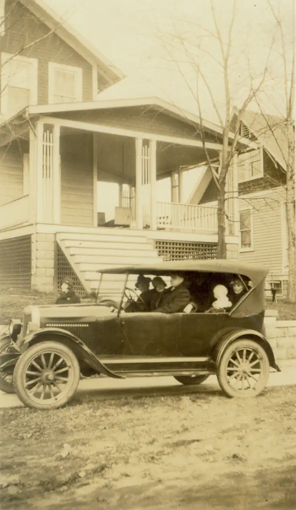

Home / Browns / 004 Brown John Henry and Matilda / brn004-00020
brn004-00020
← Return to 004 Brown John Henry and Matilda
← brn004-00019 Next →
Visible in the car: John Henry Brown (with pipe), Georgennea, Carl, Matilda holding perhaps W.I. or Grafton. I think that is Martha standing beside the car.

Actual size: 3.11" × 5.35" · Scanned at: 300 dpi · 1.49 MP (932×1604) · Image date: 7 May 2006 · Comment date: 7 May 2006
Copyright © 2005–2026 Thomas Krehbiel. Images are freely distributable for personal use. For more information about these images contact Thomas Krehbiel (tkrehbiel@gmail.com).
Photos were scanned at either 300dpi or 600dpi, depending on the quality of the photograph. Slides were scanned at 1800dpi. Documents were scanned at 100dpi or 150dpi. Photoshop enhancements: most images have had their contrast improved. Some color photos were corrected to restore color balance. Some blurry images were mildly sharpened. Occasionally dust, scratches, and blemishes were removed digitally.
{kind=link}